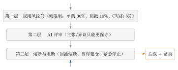

第二十二章风控不是一堵墙，是三层走廊
22.1「最多亏 10%」这句话，能兑现吗
有人问我：我把最大回撤容忍设成 \(10\%\)，是不是就保证最多亏 \(10\%\)？ 我张口就答「是」。后来在纸上画出四种亏法，才发现答错了。一条线拦不住亏损，因为穿过这条线的方式有很多种。 第一种，阴跌。每天跌 \(1\%\)，十天亏 \(10\%\)。这最「讲道理」：系统每天算回撤，\(8\%\) 预警、\(12\%\) 熔断降仓，线在这里有效。 第二种，跳空。早上出重大利空，开盘直接 \(-10\%\)。昨天收盘回撤还是 \(0\)，今天开盘已亏 \(10\%\)。线不是被磨穿，是被跨过去了——昨晚设的那个数，上午就作废。 第三种，停牌。票停牌两周，复牌后连续一字跌停，想卖也卖不掉——跌停价上的单子排成长队。回撤线早破了，可你连止损的动作都做不出来。 第四种，整体性。组合里十只票各跌 \(1\%\)，却是同一天一起跌的。回撤不是某只票造成的，是整个水位一起下去了；你逐只检查，每只都「没超限」。 四种亏法说的是同一件事：回撤是路径上的一个数，风险是一个分布。拿一个数管一个分布，注定有漏洞。 这件事真的发生过一次。早期版本的单票上限与回撤容忍写在三处，数值却不一致——一处 \(30\%\)、一处 \(20\%\)系统事实清单第 15 节第 7 条。核对时间 2026-09-24。1。策略引擎以为自己在 \(20\%\) 的笼子里跑，执行端按 \(30\%\) 放行。硬限制有两套口径，就等于没有硬限制。 这一章只回答一件事：怎么把「最多亏多少」从一句愿望，变成三层真的会拦住你的走廊。22.2飞机不靠「更小心」
飞机有三套操纵系统：液压的、电动的、纯机械的（钢索直连）。它们不是「同一系统的三个备份」，而是三条独立的路：第一套坏了走第二套，第二套也坏了还能手动拉。飞行员并不比别人「更小心」，他只是坐在一架坏一套也不会掉下来的机器里。
风控也一样。加一句「大家注意风险」不是风控，那只是语气；真正起作用的是：同一笔买单，要通过三条彼此独立的路，每条路都能单独把它拦下来。
22.3为什么只有一堵墙会漏
一堵墙——「设一个阈值，破了就停」——漏在四处：一是事后，回撤是算出来的，你看见它到 \(10\%\)，钱已经亏掉 \(10\%\)；二是单维，它只问亏了多少，不问亏得多集中、多难卖；三是静态，阈值是你今天拍的数，风险明天换形状；四是没接线，事故 #7 就是这样——限制写在那里，两个模块各信各的。 所以系统不用一堵墙，用三层走廊：你必须依次走过三个房间，任何一个房间都可以把你请出去。22.4它在系统里长什么样：三层走廊

22.4.1第一层：规则风控门——把数写死，并且只写一遍
第一层是写死的数字。它们集中在internal/policy/engine.go 的 HardLimits 里。
| 限制名（结构体字段） | 默认值 | 它在拦什么 |
MaxSinglePosition | \(0.30\) | 单票占组合总资产上限 |
MaxSectorExposure | \(0.50\) | 单行业合计暴露上限 |
MaxPortfolioLeverage | \(1.50\) | 总杠杆（当前不融资，留接口） |
MaxDailyLoss | \(0.05\) | 单日损失上限 |
MaxDrawdown | \(0.10\) | 组合最大回撤容忍（事故 #7 统一后的口径） |
MaxOrderSize | \(100000\) | 单笔名义金额上限（元） |
MaxTurnover | \(1.00\) | 年化换手率上限 |
MaxSlippage | \(0.005\) | 单笔滑点上限 |
MinLiquidity | \(0.10\) | 流动性下限（越界即视为流动性风险） |
值为 NewPolicyEngine 的默认硬限制；「年化换手率」指单位资本一年内累计成交额倍数。
系统源码 internal/policy/engine.go 的 HardLimits 结构体与 NewPolicyEngine 默认值；核对时间 2026-09-24。
- 风控师（
RiskLimits）：写进审查文案； - 策略引擎（
HardLimits，上表）：下单前据此算违规； - 风险中心（
internal/riskcenter/riskcenter.go的buildCompliance）：把「单票持仓上限」「最大回撤」做成两条独立校验，阈值取hl.MaxSinglePosition与hl.MaxDrawdown系统源码internal/riskcenter/riskcenter.go的buildCompliance。核对时间 2026-09-24。2。
internal/intelligence/risk_engine.go 的 generateStressScenarios。核对时间 2026-09-24。3。\(8\%\) 也用在综合风险评分：computeRiskScore 把它当 CVaR 归一化基准（VaR 0.05、波动率 0.25、回撤 0.15）系统源码 internal/intelligence/risk_engine.go 的 computeRiskScore。核对时间 2026-09-24。4。
22.4.2第二层：AI 评审——只能更保守
第一层是死数，不会思考；第二层补的是「这段逻辑讲不讲得通」。做法是：规则先给一个建议仓位ruleRate，主张官与异议者各说一句，最后取最小：
\[\text{Effective}=\min\Bigl(\text{ruleRate},\ \clamp(\text{主张},0.2,1.0),\ \clamp(\text{异议},0.2,1.0),\ \kelly\Bigr). \tag{22.1}\]
这个符号在讲什么：四个数取最小，意味着任何一个环节都不许把仓位放大。主张官说「加倍买」没用，因为 \(\clamp(\cdot,0.2,1.0)\) 把它锁在 \(1.0\) 以内；\(\text{ruleRate}\) 若只有 \(0.3\)，最终就是 \(0.3\)。
更关键的是硬回退：AI 未配置、调用失败、超时或输出解析不了时，直接退回 ruleRate，不给一个「猜的」仓位系统事实清单第 7 节：LLM 未配置/失败/超时/解析失败时硬回退。核对时间 2026-09-24。5。这与第 第二十一章 章同源：AI 只能让仓位变小；想放大必须回到第一层改硬限制，那是需要人签字的地方。
22.4.3第三层：熔断与阻断——把开关按下去
前两层都在算「这一笔该不该放行」。第三层管的是「今天整个车间还开不开机」。它有三个开关。 开关一：净值回撤熔断。系统设两条线：预警线 \(8\%\)、止损线 \(12\%\)系统源码internal/cio/cio.go 的常量 drawdownWarnPct = 8.0、drawdownStopPct = 12.0，判定函数 drawdownStatus。核对时间 2026-09-24。6。盘中触发预警线 → 暂停新建仓；触发止损线 → 生成 DecisionPauseTrading 决策并强制降仓：股票市值压回「总资产 \(\times 0.5\)」的现金目标，卖出量向下取整到 \(100\) 股系统源码 internal/cio/cio.go 的 drawdownRiskReduceOrders（cashTargetPct = 0.5，sell = (sell/100)*100）。核对时间 2026-09-24。7。
开关二：暂停建仓（共享阻断开关）。它独立于紧急停止，真源在 Policy 引擎：pauseBuilding() 读 policyEngine.IsPauseBuilding()系统源码 internal/cio/cio.go 的 pauseBuilding 与 PauseBuilding。核对时间 2026-09-24。8。它只拦买入，卖出与止损照常。执行端在 engine.Buy 最前面生效——连手动点「买入」都会被拦系统源码 internal/portfolio/engine.go 的 Buy：入口处 buyStopped() 为真即返回错误，注释写明「执行层最终防线，独立于紧急停止——仅拦截买入」。核对时间 2026-09-24。9。
开关三：紧急停止。这是最重的那个。它同时拦买入和卖出，覆盖 CIO 建仓、自动股票池、下单工具、审批补确认所有入口系统源码 internal/portfolio/engine.go 的 emergencyStopped 门控，同时出现在 Buy 与 Sell 开头；对照 internal/portfolio/engine_test.go 的 TestEmergencyStopGateBlocksTrades。核对时间 2026-09-24。10。
除这三个开关，还有一道来自第 第十九章 章的闸门：六维判势为「退潮风险」或仓位系数 \(\posrate\le 0.15\) 时，禁止生成新买入订单。库里 market_sixdim_daily 的真实记录中有两天正踩在闸门内侧：\(2026\)-\(09\)-\(10\) 的 \(\posrate\) 为 \(0.10\)11、\(2026\)-\(09\)-\(11\) 的 \(\posrate\) 为 \(0.06\)12，两天的标签都是「退潮风险」系统事实清单第 13.3 节 market_sixdim_daily 的 5 条真实记录。核对时间 2026-09-24。13。那两天，系统只允许卖，不允许买。
22.4.4执行端的最后一厘米：buyRiskGate
就算前三条走廊都放行了，扣现金之前还有一道硬复核：buyRiskGate系统源码 internal/portfolio/engine.go 的 buyRiskGate（行 888 起），调用点在 Buy 中现金校验之前。核对时间 2026-09-24。14。它做两件事：
const (
maxSinglePositionPct = 0.30 // 单票占组合市值上限（与 policy 默认一致）
maxBuyCongestPct = 0.08 // 单笔买入名义金额 <= 当日成交额的比例
)
// 1) 单票集中度：(已有持仓市值 + 本笔) / 总资产 <= 30%
afterPct := (existingVal + gross) / totalAssets
if afterPct > maxSinglePositionPct { return "单票集中度超限：..." }
// 2) 买入流动性拥挤度：本笔名义金额 > 当日成交额 * 8% 则拒绝
if snap.Turnover > 0 && gross > snap.Turnover*maxBuyCongestPct {
return "买入流动性拥挤：薄盘大单难成交/难离场，已拦截"
}22.5把「最多亏多少」变成可算的数
现在回到开头那句话。要让「最多亏 \(10\%\)」有意义，先得把它从「一条路径上的一个数」翻译成「一个分布上的一个量」。 先给一个差不多对的模型。只看一天的损失，记成随机变量 \(L\)（亏损为正）。最朴素的想法是：「我有 \(95\%\) 的把握不会亏超过某个数」——把「把握」当分位数，这个数就是后面要严格定义的 风险价值（Value at Risk）。它在哪里失效？一是只报一个数，不告诉你超过之后有多惨；二是可能不满足「分散化一定不亏」的直觉——这一点用反例说清楚。 下面把它严谨化。先立三条假设，后面每一处引用都会点名。假设 22.1（H1：可积性）
损失随机变量 \(L\) 满足 \(\E\abs{L}<\infty\)。这条保证后文出现的分位数、条件期望与积分都有限、有意义。
假设 22.2（H2：分布连续）
\(L\) 的分布函数 \(F_L(\ell)=\Prob(L\le\ell)\) 连续且在尾部严格递增。它保证「分位数形式」与「条件期望形式」的 CVaR 相等（见引理 22.9）。去掉这条，两种形式会在有原子的地方分家——本章的离散算例会当场演示这一点。
假设 22.3（H3：二阶矩）
需要用到波动率、Sharpe、Beta 这些指标时，额外假设 \(\E[L^2]<\infty\)。本章的三个定理都不需要它，标出来是为了说明：波动率类指标比 VaR/CVaR 类指标对分布的要求更强。
22.5.1VaR：一个分位数
定义 22.4（VaR）
给定置信水平 \(\alpha\in(0,1)\)，损失 \(L\) 的 \(\alpha\)-分位损失为
\[\mathrm{VaR}_\alpha(L)=\inf\{\ell\in\R:\ \Prob(L\le\ell)\ge\alpha\}. \tag{22.2}\]
口语一点：在任何「损失不超过 \(\ell\)」的概率已经不低于 \(\alpha\) 的 \(\ell\) 里，取最小的那个。
定理 22.5（VaR 的三条好性质）
在假设 22.1 下，对任意 \(\alpha\in(0,1)\)：
(i)（单调性） 若 \(L_1\le L_2\) 几乎处处，则 \(\mathrm{VaR}_\alpha(L_1)\le\mathrm{VaR}_\alpha(L_2)\)。
(ii)（正齐次性） 对一切 \(\lambda>0\)，\(\mathrm{VaR}_\alpha(\lambda L)=\lambda\,\mathrm{VaR}_\alpha(L)\)。
(iii)（平移不变性） 对一切 \(c\in\R\)，\(\mathrm{VaR}_\alpha(L+c)=\mathrm{VaR}_\alpha(L)+c\)。
证明■
先做一个统一的技术观察：三个部分的证明都归结为集合 \(\mathcal{A}_\alpha\) 的比较——集合越大，下确界越小。
(i) 设 \(L_1\le L_2\) 几乎处处。固定任意 \(\ell\)。因为每个满足 \(L_2(\omega)\le\ell\) 的 \(\omega\) 都满足 \(L_1(\omega)\le L_2(\omega)\le\ell\)，除去零概率例外集后有
\[\{L_2\le\ell\}\subseteq\{L_1\le\ell\}
\quad\Longrightarrow\quad
\Prob(L_1\le\ell)\ge\Prob(L_2\le\ell). \tag{22.3}\]
于是只要 \(\ell\in\mathcal{A}_\alpha(L_2)\)，就有 \(\Prob(L_1\le\ell)\ge\Prob(L_2\le\ell)\ge\alpha\)，即 \(\ell\in\mathcal{A}_\alpha(L_1)\)。故
\[\mathcal{A}_\alpha(L_2)\subseteq\mathcal{A}_\alpha(L_1). \tag{22.4}\]
一个集合变大，下确界只会变小（集合里多了元素，可选的候选更多），所以 \(\inf\mathcal{A}_\alpha(L_1)\le\inf\mathcal{A}_\alpha(L_2)\)，即 (i)。
(ii) 固定 \(\lambda>0\)。对任意 \(\ell\)，
\[\Prob(\lambda L\le\ell)=\Prob\!\ap{L\le \tfrac{\ell}{\lambda}}=F_L\!\ap{\tfrac{\ell}{\lambda}} . \tag{22.5}\]
于是
\[\ell\in\mathcal{A}_\alpha(\lambda L)
\iff F_L\!\ap{\tfrac{\ell}{\lambda}}\ge\alpha
\iff \tfrac{\ell}{\lambda}\in\mathcal{A}_\alpha(L)
\iff \ell\in\lambda\,\mathcal{A}_\alpha(L), \tag{22.6}\]
即 \(\mathcal{A}_\alpha(\lambda L)=\lambda\,\mathcal{A}_\alpha(L)\)。因为 \(\lambda>0\) 保持实数大小次序不变，映射 \(\ell\mapsto\lambda\ell\) 把下确界映为下确界：\(\inf(\lambda\mathcal{A})=\lambda\inf\mathcal{A}\)。故 \(\mathrm{VaR}_\alpha(\lambda L)=\lambda\,\mathrm{VaR}_\alpha(L)\)。
(iii) 认真算一遍。对任意 \(\ell\)，
\[\Prob(L+c\le\ell)=\Prob(L\le\ell-c)=F_L(\ell-c). \tag{22.7}\]
于是 \(\ell\in\mathcal{A}_\alpha(L+c)\iff \ell-c\in\mathcal{A}_\alpha(L)\iff \ell\in\mathcal{A}_\alpha(L)+c\)，即 \(\mathcal{A}_\alpha(L+c)=\mathcal{A}_\alpha(L)+c\)。加法是保序的平移，平移不改变下确界相对结构，\(\inf(\mathcal{A}+c)=\inf\mathcal{A}+c\)。故 \(\mathrm{VaR}_\alpha(L+c)=\mathrm{VaR}_\alpha(L)+c\)。
22.5.2VaR 的致命缺陷：它不是次可加的
三条好性质里少了一条。风险度量最该有的一条叫次可加性（subadditivity）：\[\mathrm{VaR}_\alpha(L_1+L_2)\ \le\ \mathrm{VaR}_\alpha(L_1)+\mathrm{VaR}_\alpha(L_2). \tag{22.8}\]
它的现实含义是「分散化不会更糟」：两个东西合起来看的风险，不该超过各自风险之和。VaR 做不到，而且不是偶尔不成立，是结构性地不成立。
定理 22.6（VaR 一般不是次可加的）
存在同一概率空间上的损失 \(L_1,L_2\) 与 \(\alpha\in(0,1)\)，使
\[\mathrm{VaR}_\alpha(L_1+L_2)>\mathrm{VaR}_\alpha(L_1)+\mathrm{VaR}_\alpha(L_2). \tag{22.9}\]
也就是说，式 (22.8) 不成立；VaR 因此不是一致风险度量。
例 22.7（两只独立债券：把反例算干净）
设组合里有两只债券 \(L_1,L_2\)，各自独立，违约概率都是 \(p=0.04\)，违约损失为 \(100\) 元，不违约损失为 \(0\)。取 \(\alpha=0.95\)。
单只的 VaR。对 \(L_1\)：\(\Prob(L_1\le0)=0.96\ge0.95\)，而对任何 \(\ell<0\) 有 \(\Prob(L_1\le\ell)=0<0.95\)。故 \(\mathcal{A}_{0.95}(L_1)=[0,+\infty)\)，\(\mathrm{VaR}_{0.95}(L_1)=0\)。\(L_2\) 同理，也是 \(0\)。两者之和为
\[\mathrm{VaR}_{0.95}(L_1)+\mathrm{VaR}_{0.95}(L_2)=0. \tag{22.10}\]
组合的 VaR。和 \(L_1+L_2\) 的分布是
\begin{align}\Prob(L_1+L_2=0)&=0.96^2=0.9216,\\
\Prob(L_1+L_2=100)&=2\times0.04\times0.96=0.0768,\\
\Prob(L_1+L_2=200)&=0.04^2=0.0016 . \tag{22.11}\end{align}
因为 \(0.9216<0.95\le0.9984=0.9216+0.0768\)，而对 \(\ell\in[0,100)\) 有 \(\Prob(L_1+L_2\le\ell)=0.9216<0.95\)，所以
\[\mathcal{A}_{0.95}(L_1+L_2)=[100,+\infty),\qquad \mathrm{VaR}_{0.95}(L_1+L_2)=100 . \tag{22.12}\]
结论。\(100>0+0\)，次可加性被打破：两个各自「\(95\%\) 把握一分不亏」的资产，合在一起却有 \(5\%\) 以上的概率至少亏 \(100\) 元本章为说明定理 22.6 构造的手算例子，非系统运行数据；两只债券独立、违约概率 \(0.04\)、违约损失 \(100\) 元。15。注意这里 \(p=0.04<1-\alpha=0.05\) 是关键：单只落在尾部之外，合起来就把尾部填满了。
证明■
取 例 22.7 中的 \(L_1,L_2\) 与 \(\alpha=0.95\)。按定义 22.4 逐项计算（详细数值推导见上例），得
\[\mathrm{VaR}_{0.95}(L_1)=\mathrm{VaR}_{0.95}(L_2)=0,\qquad
\mathrm{VaR}_{0.95}(L_1+L_2)=100 , \tag{22.13}\]
于是 \(100>0+0\)，式 (22.8) 的反例成立。
22.5.3CVaR：把分位数换成尾部均值
VaR 报的是一条线。既然这条线会骗人，那就别只要线——顺便问一句「线的那一边，平均有多惨」。定义 22.8（CVaR）
对 \(\alpha\in(0,1)\)，损失 \(L\) 的 \(\alpha\)-条件风险价值定义为分位数对置信水平的积分平均：
\[\mathrm{CVaR}_\alpha(L)=\frac{1}{1-\alpha}\int_\alpha^1 \mathrm{VaR}_u(L)\,du . \tag{22.14}\]
当假设 22.2 成立时，它还有一种更好记的写法：
\[\mathrm{CVaR}_\alpha(L)=\E\bigl[\,L\ \big|\ L\ge \mathrm{VaR}_\alpha(L)\,\bigr]. \tag{22.15}\]
口语一点：只看最坏的那 \(1-\alpha\) 段，把它们的损失取平均。
引理 22.9（两种写法在连续分布下相等）
设假设 22.1、22.2 成立，记 \(q=\mathrm{VaR}_\alpha(L)\)。则 式 (22.14) 的积分等于 式 (22.15) 的条件期望。
证明■
H2 说 \(F_L\) 连续严格递增，故它可逆，且 \(\mathrm{VaR}_u(L)=F_L^{-1}(u)\)、\(\Prob(L\ge q)=1-F_L(q)=1-\alpha\)。
对 式 (22.14) 做换元 \(u=F_L(x)\)，则 \(du=f_L(x)\,dx\)，且 \(F_L^{-1}(F_L(x))=x\)；下限 \(u=\alpha\) 对应 \(x=q\)，上限 \(u=1\) 对应 \(x\to+\infty\)。于是
\[\int_\alpha^1 \mathrm{VaR}_u(L)\,du
=\int_q^{+\infty} x\,f_L(x)\,dx
=\E\bigl[L\,\ind{L\ge q}\bigr]. \tag{22.16}\]
两边同除以 \(1-\alpha=\Prob(L\ge q)\)：
\[\frac{1}{1-\alpha}\int_\alpha^1 \mathrm{VaR}_u(L)\,du
=\frac{\E\bigl[L\,\ind{L\ge q}\bigr]}{\Prob(L\ge q)}
=\E\bigl[L\mid L\ge q\bigr]. \tag{22.17}\]
即 式 (22.14) 与 式 (22.15) 相等。
注 22.10（H2 不是装饰）
引理 22.9 用到两处 \(F_L\) 连续：可逆，以及 \(\Prob(L\ge q)=1-\alpha\)。\(L\) 若含原子（离散分布），\(F_L\) 在跳跃点不可逆，两种写法就分家。例 22.7 就是证据：按积分形式 式 (22.14) 算得 \(80\)，按条件期望形式算得 \(\E[L_1\mid L_1\ge0]=4\)。同一个名字，两个数。系统的历史法实现取积分/尾部集合的口径。
22.5.4CVaR 的一致性
一致风险度量要满足四条：单调、正齐次、平移不变、次可加。VaR 前三条有、第四条没有；CVaR 四条都有。定理 22.11（CVaR 满足四条一致性公理）
设假设 22.1、22.2 成立，\(\alpha\in(0,1)\)。则：
(i)（单调性） \(L_1\le L_2\) 几乎处处 \(\Rightarrow\) \(\mathrm{CVaR}_\alpha(L_1)\le\mathrm{CVaR}_\alpha(L_2)\)；
(ii)（正齐次性） \(\lambda>0\Rightarrow \mathrm{CVaR}_\alpha(\lambda L)=\lambda\,\mathrm{CVaR}_\alpha(L)\)；
(iii)（平移不变性） \(c\in\R\Rightarrow \mathrm{CVaR}_\alpha(L+c)=\mathrm{CVaR}_\alpha(L)+c\)；
(iv)（次可加性） \(\mathrm{CVaR}_\alpha(L_1+L_2)\le\mathrm{CVaR}_\alpha(L_1)+\mathrm{CVaR}_\alpha(L_2)\)。
引理 22.12（CVaR 的共轭（上确界）表示）
设假设 22.1、22.2 成立，记 \(\lambda_\alpha=\frac{1}{1-\alpha}\)。令
\[\mathcal{Z}_\alpha=\Bigl\{Z\ \Big|\ Z\ \text{可测},\ 0\le Z\le \lambda_\alpha\ \text{a.s.},\ \E Z=1\Bigr\}. \tag{22.18}\]
则
\[\mathrm{CVaR}_\alpha(L)=\sup_{Z\in\mathcal{Z}_\alpha}\E[ZL]. \tag{22.19}\]
证明■
第一步：证明一个中间表示（Rockafellar--Uryasev 形式）
\[\mathrm{CVaR}_\alpha(L)=\inf_{t\in\R}\Bigl\{t+\lambda_\alpha\,\E\bigl[(L-t)^+\bigr]\Bigr\},
\qquad (x)^+=\max(x,0), \tag{22.20}\]
并且 \(t=q=\mathrm{VaR}_\alpha(L)\) 处取到下确界。
先证「\(\le\)」。对任意 \(t\)，每个 \(u\) 都有 \(\mathrm{VaR}_u(L)\le t+\bigl(\mathrm{VaR}_u(L)-t\bigr)^+\)，两边在 \([\alpha,1]\) 上积分：
\[\int_\alpha^1 \mathrm{VaR}_u(L)\,du\ \le\ (1-\alpha)\,t+\int_\alpha^1\bigl(\mathrm{VaR}_u(L)-t\bigr)^+\,du . \tag{22.21}\]
再看被积项：因假设 22.2 下 \(\mathrm{VaR}_u(L)=F_L^{-1}(u)\)，换元 \(u=F_L(x)\) 得
\[\int_{F_L(t)}^{1}\bigl(F_L^{-1}(u)-t\bigr)^+\,du
=\int_t^{+\infty}(x-t)\,f_L(x)\,dx=\E\bigl[(L-t)^+\bigr]. \tag{22.22}\]
而 \([\alpha,1]\) 与 \([F_L(t),1]\) 的位置关系决定方向：若 \(F_L(t)\le\alpha\)，被积函数非负，区间更短的 \([\alpha,1]\) 上积分不超过 \([F_L(t),1]\) 上的；若 \(F_L(t)>\alpha\)，则 \([\alpha,F_L(t)]\) 上 \(F_L^{-1}(u)\le t\)、被积函数为 \(0\)，两段相等。合起来：
\[\int_\alpha^1\bigl(\mathrm{VaR}_u(L)-t\bigr)^+\,du\ \le\ \E\bigl[(L-t)^+\bigr]. \tag{22.23}\]
代入并除以 \(1-\alpha\) 得 \(\mathrm{CVaR}_\alpha(L)\le t+\lambda_\alpha\E[(L-t)^+]\) 对一切 \(t\) 成立，故
\[\mathrm{CVaR}_\alpha(L)\le\inf_{t}\Bigl\{t+\lambda_\alpha\E\bigl[(L-t)^+\bigr]\Bigr\}. \tag{22.24}\]
再证「\(\ge\)」，即在 \(t=q\) 处取到。由 H2，\(F_L(q)=\alpha\)，上面那个换元在这一情形取等号，故 \(\int_\alpha^1(\mathrm{VaR}_u-q)^+du=\E[(L-q)^+]\)。于是
\begin{align}q+\lambda_\alpha\E\bigl[(L-q)^+\bigr]
&=q+\lambda_\alpha\int_\alpha^1\bigl(\mathrm{VaR}_u(L)-q\bigr)\,du\\
&=q+\lambda_\alpha\int_\alpha^1\mathrm{VaR}_u(L)\,du-\lambda_\alpha\,q\,(1-\alpha)
=\mathrm{CVaR}_\alpha(L), \tag{22.25}\end{align}
最后一步用了 \(\lambda_\alpha(1-\alpha)=1\)。故下确界不超过 \(\mathrm{CVaR}_\alpha(L)\)，与上一段合起来即得 式 (22.20)。
第二步：证明 式 (22.19) 的两个方向。
（\(\le\)）任取 \(Z\in\mathcal{Z}_\alpha\) 与任意 \(t\in\R\)。由 \(L-t\le(L-t)^+\) 且 \(Z\ge0\) 得 \((L-t)Z\le(L-t)^+Z\)；再由 \((L-t)^+\ge0\) 且 \(Z\le\lambda_\alpha\) 得 \((L-t)^+Z\le\lambda_\alpha(L-t)^+\)。取期望：
\[\E[ZL]=\E[Z]\,t+\E[(L-t)Z]=t+\E[(L-t)Z]\le t+\lambda_\alpha\E\bigl[(L-t)^+\bigr]. \tag{22.26}\]
（第二个等号用了 \(\E Z=1\)。）对 \(t\) 取下确界并用 式 (22.20) 得 \(\E[ZL]\le\mathrm{CVaR}_\alpha(L)\)；再对 \(Z\) 取上确界：\(\sup_{Z\in\mathcal{Z}_\alpha}\E[ZL]\le\mathrm{CVaR}_\alpha(L)\)。
（\(\ge\)）取 \(q=\mathrm{VaR}_\alpha(L)\)，构造 \(Z^\star=\lambda_\alpha\ind{L>q}\)。它合法：\(0\le Z^\star\le\lambda_\alpha\)；由 H2 的连续性 \(\Prob(L>q)=\Prob(L\ge q)=1-\alpha\)，故
\[\E Z^\star=\lambda_\alpha\Prob(L>q)=\frac{1-\alpha}{1-\alpha}=1 . \tag{22.27}\]
再算期望，用 引理 22.9：
\[\E[Z^\star L]=\lambda_\alpha\E\bigl[L\ind{L>q}\bigr]=\E\bigl[L\mid L>q\bigr]=\mathrm{CVaR}_\alpha(L). \tag{22.28}\]
所以 \(\sup_{Z\in\mathcal{Z}_\alpha}\E[ZL]\ge\mathrm{CVaR}_\alpha(L)\)。两个方向合起来就是 式 (22.19)。
证明■
(i) 由定理 22.5(i)，对每个 \(u\) 有 \(\mathrm{VaR}_u(L_1)\le\mathrm{VaR}_u(L_2)\)。被积函数逐点不大，积分就不大，两边同乘 \(\lambda_\alpha>0\) 得
\[\mathrm{CVaR}_\alpha(L_1)\le\mathrm{CVaR}_\alpha(L_2). \tag{22.29}\]
(ii) 由定理 22.5(ii)，\(\mathrm{VaR}_u(\lambda L)=\lambda\,\mathrm{VaR}_u(L)\) 对每个 \(u\) 成立。常数可以提出积分：
\[\mathrm{CVaR}_\alpha(\lambda L)
=\lambda_\alpha\!\int_\alpha^1\!\lambda\,\mathrm{VaR}_u(L)\,du
=\lambda\,\lambda_\alpha\!\int_\alpha^1\!\mathrm{VaR}_u(L)\,du
=\lambda\,\mathrm{CVaR}_\alpha(L). \tag{22.30}\]
(iii) 由定理 22.5(iii)，\(\mathrm{VaR}_u(L+c)=\mathrm{VaR}_u(L)+c\)。于是
\[\mathrm{CVaR}_\alpha(L+c)
=\lambda_\alpha\!\int_\alpha^1\!\bigl(\mathrm{VaR}_u(L)+c\bigr)du
=\mathrm{CVaR}_\alpha(L)+\lambda_\alpha\,c\,(1-\alpha)
=\mathrm{CVaR}_\alpha(L)+c, \tag{22.31}\]
末步用 \(\lambda_\alpha(1-\alpha)=1\)。
(iv) 这一步只能走共轭表示——积分对「和的尾部区间」没有直接控制。任取 \(Z\in\mathcal{Z}_\alpha\)，期望对加法线性：
\[\E\bigl[Z(L_1+L_2)\bigr]=\E[ZL_1]+\E[ZL_2]\le\mathrm{CVaR}_\alpha(L_1)+\mathrm{CVaR}_\alpha(L_2), \tag{22.32}\]
末步对两项分别用引理 22.12。右边与 \(Z\) 无关，故对 \(Z\) 取上确界仍不超过它：
\[\mathrm{CVaR}_\alpha(L_1+L_2)=\sup_{Z\in\mathcal{Z}_\alpha}\E\bigl[Z(L_1+L_2)\bigr]\le\mathrm{CVaR}_\alpha(L_1)+\mathrm{CVaR}_\alpha(L_2). \tag{22.33}\]
（第一个等号再次用引理 22.12；这张引理之所以要证得那么细，就是因为这里。）(i)--(iv) 即四条一致性公理。
22.5.5CVaR 至少和 VaR 一样大
最后补一条直觉上「必须成立」的性质，它说明 CVaR 不是换了个东西，而是 VaR 的加严版。引理 22.13（VaR 关于置信水平单调）
设 \(0<\alpha\le\beta<1\)，则 \(\mathrm{VaR}_\alpha(L)\le\mathrm{VaR}_\beta(L)\)。
证明■
若 \(\ell\in\mathcal{A}_\beta(L)\)，则 \(\Prob(L\le\ell)\ge\beta\ge\alpha\)，故 \(\ell\in\mathcal{A}_\alpha(L)\)，即 \(\mathcal{A}_\beta(L)\subseteq\mathcal{A}_\alpha(L)\)，取下确界得 \(\mathrm{VaR}_\alpha(L)\le\mathrm{VaR}_\beta(L)\)。
定理 22.14（\(\mathrm{CVaR}\ge\mathrm{VaR}\)）
设假设 22.1 成立，则对一切 \(\alpha\in(0,1)\)，
\[\mathrm{CVaR}_\alpha(L)\ \ge\ \mathrm{VaR}_\alpha(L). \tag{22.34}\]
证明■
由引理 22.13，函数 \(u\mapsto\mathrm{VaR}_u(L)\) 在 \([\alpha,1]\) 上非减，故对每个 \(u\in[\alpha,1]\) 有 \(\mathrm{VaR}_u(L)\ge\mathrm{VaR}_\alpha(L)\)。在区间上逐点比较后积分：
\[\int_\alpha^1\mathrm{VaR}_u(L)\,du\ \ge\ \int_\alpha^1\mathrm{VaR}_\alpha(L)\,du=(1-\alpha)\,\mathrm{VaR}_\alpha(L). \tag{22.35}\]
两边同除 \(1-\alpha>0\)，得 \(\mathrm{CVaR}_\alpha(L)\ge\mathrm{VaR}_\alpha(L)\)。
22.5.6系统里的历史法：指标是怎么算出来的
系统里的风险指标有两个引擎，各司其职：- 传统风控（
internal/risk/engine.go）：RiskMetrics里排开VaR95、VaR99、CVaR95、Volatility、SharpeRatio、MaxDrawdown、Beta、SortinoRatio、CalmarRatio（外加R2、DownsideDev、UpsideDev）；止损止盈在DefaultStopLossConfig：初始止损 \(0.05\)、移动止损 \(0.03\)、ATR 倍数 \(2.0\)、最大持仓 \(120\) 天、止盈锁定 \(0.20\)/回撤 \(0.10\)。 - 计算中台（
internal/intelligence/risk_engine.go）：ComputePortfolioRisk输出 VaR/ES、年化波动率、最大回撤、Beta、相关性、集中度（HHI）、流动性代理与压力测试六情景，合成OverallScore与NORMAL/WATCH/WARNING/CRITICAL四档（分界 \(0.3/0.5/0.7\)）。
internal/risk/engine.go 为例，CalculateVaR 取 \(\mathrm{idx}=\lfloor(1-\text{confidence})\cdot n\rfloor\)，CalculateCVaR 取排序后前 \(\mathrm{idx}+1\) 个（最坏尾部）的绝对值均值系统源码 internal/risk/engine.go 的 CalculateVaR、CalculateCVaR；internal/intelligence/risk_engine.go 的 computeHistoricalVaR、computeHistoricalCVaR 同口径。核对时间 2026-09-24。17。这与本章理论口径有三处差别：样本有限（分位数落在某根真实 K 线上，不插值）、序号取整、损失取绝对值。压力测试六情景的冲击写死在源码里：\(-15\%/-5\%/-8\%/-10\%/-12\%/-7\%\)，估计损失按「基准波动率 \(\times\) 倍数 \(\times\) 冲击 \(\times10\)」计算并封顶到 \(1.0\)系统源码 internal/intelligence/risk_engine.go 的 generateStressScenarios（shock 依次为上列六值）。核对时间 2026-09-24。18。
这些指标的输入也要交代。组合日收益率由 computePositionReturns 给出：每个持仓取最近 120 天收盘价算日收益率，按市值占比加权，再按日期对齐相加；历史不足 \(10\) 个点的标的跳过，记「无法计算可靠的 VaR/ES」系统源码 internal/cio/cio.go 的 computePositionReturns（historyDays = 120）；事实清单第 11 节：无历史时用沪深 300 参考。核对时间 2026-09-24。19。这条「不够就跳过、不伪造」的纪律跟全书一致。
这些指标本章只给口径、不给数值：口径可核对，数值不猜20本书写作时未取到可核对的运行数值；系统库中对应记录不作为引用依据。核对时间 2026-09-24。21。MaxDrawdown 是净值曲线峰谷最大跌幅；Beta、Sortino、Calmar 分别是对基准回归、下行偏差、年化收益比回撤。
22.6风控的最后一米：盘口五态
前三层管的是「你的账」，最后一米管的是「市场答不答应」：想卖得有人接，想买得有人卖。A 股把这最后一米压成五种状态。internal/orderbook/orderbook.go 的 Classify 是个纯函数：吃进现价、涨跌停价、买一卖一的价与量、内外盘、量比、当日成交量，吐出一个状态，靠两条经验阈值：
\[\text{封单量阈值}=\max\bigl(1000\ \text{手},\ \text{当日成交量}\times10\%\bigr),\qquad
\text{放量阈值}=2.0 . \tag{22.36}\]
| 状态 | 英文枚举 | 判定条件与后果 |
| 涨停封死 | sealed_limit_up | 触涨停 且 买一价 \(\ge\) 涨停价 且 买一量 \(\ge\) 封单阈值 |
| 涨停打开 | opened_limit_up | 触涨停但封单薄，可成交 |
| 跌停封死 | sealed_limit_down | 触跌停 且 卖一价 \(\le\) 跌停价 且 卖一量 \(\ge\) 封单阈值 |
| 跌停打开 | opened_limit_down | 触跌停但封单薄（常伴巨量换手），可离场 |
| 正常 | normal | 未触及涨跌停 |
另两条信号：巨量跌停=触及跌停且量比 \(\ge2.0\)；抛压占优=内盘占比 \(>0.60\)（InVolDominant）。涨跌停判定带浮点容差 \(10^{-6}\)。
系统源码 internal/orderbook/orderbook.go 的 Classify、sealThreshold 与常量 MinSealVolHands=1000、SealVolRatio=0.10、HugeVolumeRatio=2.0、InVolDominant=0.60；核对时间 2026-09-24。
internal/portfolio/engine.go 的 buyBlockReason 与 sellBlockReason；LimitPctForSymbol 提供各板块涨跌停幅度。核对时间 2026-09-24。22：
买入拦两样：跌停板，和涨停封死。拦跌停板是拦「接飞刀」：现价 \(\le\) 跌停价（容差 \(10^{-9}\)）即拒；拦涨停封死是拦「排队买不进」：挂上去大概率当天成交不了，系统不装作成交。
卖出只拦一样：跌停封死。封死时你的单子排在长队里，当天卖不掉；拦下来反而保留持仓。
跌停打开要放行。这条最反直觉：跌停打开意味着封单薄、换手大——门开着，赶紧按跌停价走。原则很明确：拦截是为了「别做无效的事」，不是「留住仓位」——封死的保留，打开的放行；行情读不到时一律不拦。
22.7跑不掉的仓位等于负债：流动性锁定指标
买了卖不掉的仓位，等于没有流动性。系统为此单独算一个指标：liquidityLockMetrics系统源码 internal/tools/investment_tools.go 的 liquidityLockMetrics（行 734 起），供 PortfolioRiskMetricsTool 使用。核对时间 2026-09-24。23——遍历持仓，逐只按实时快照判定盘口状态，「跌停封死」的市值算进「锁定市值」。
| 字段 | 含义 |
liquidity_locked_positions | 「跌停封死」的持仓只数 |
liquidity_locked_value | 这些持仓的市值合计（元） |
position_value | 全部持仓市值合计（元） |
liquidity_locked_ratio_pct | 锁定市值占持仓市值百分比 |
liquidity_locked_note | 数据来源与降级说明（无持仓 / 引擎未初始化时写明原因） |
这组指标与收益历史无关：即使组合收益率不足、算不出 VaR，它照样算得出来。
系统源码 internal/tools/investment_tools.go 的 liquidityLockMetrics 与 PortfolioRiskMetricsTool.Execute；核对时间 2026-09-24。
data/stock.duckdb 中无对应历史落库记录。核对时间 2026-09-24。25。
盘口数据本身会落库。每天收盘后，OrderBookDailyProcessor.RecordOrderBookDaily 把可交易股票池当日的盘口摘要写进 order_book_daily，供次日的盘口因子使用——是次日，所以没有前视偏差系统源码 internal/scheduler/auto_scheduler.go 的 RecordOrderBookDaily、internal/data/duckdb.go 中该表的建表与写入。核对时间 2026-09-24。26。这张表必须点名留白：写入路径存在，但当前表内 \(0\) 行，本章任何「盘口因子回测结果」都无从引用\(0\) 行27系统事实清单第 13.2 节：order_book_daily 实测 \(0\) 行，引用时必须标「数据缺失」。核对时间 2026-09-24。28。
22.8常见误解与纠偏
这也是我一开始的想法：风控做得越严，亏得越少，最好一分不亏。
错在把「风控」和「不交易」画了等号。风控的目标只有一句话：不让钱以你无法承受的方式亏掉。能承受的亏损照样会发生，那是换收益的成本。系统的拦截规则都贯彻这条：拦接飞刀、拦薄盘大单、拦排队买不进，却从不拦按计划的止损——跌停打开那天它甚至主动放行。
一个把仓位全部冻结的系统看起来「零风险」，其实是在替你做一个没授权的决定。这就是「暂停建仓」与「紧急停止」必须分成两个开关的原因：前者只拦买入，后者才全部停下——严格程度必须分级，「可控」才是目的。
这是本章最重要的纠偏，因为系统真的在这里翻过车。
事故 #7 的根因是：单票上限和回撤容忍在两个模块里数值不一致，一处 \(30\%\)、一处 \(20\%\)（出处见本章第 1 节的同一事故脚注）。写的人以为「都是限制」，读的人以为「都一致」；结果是策略层按 \(20\%\) 算违规、执行层按 \(30\%\) 放行，谁也没错，限制却不存在。
修法不是「把两处改成一样」这么轻，而是让同一件事有多个可对账的地方：三处都写这两个数，且风险中心把「单票持仓上限」「最大回撤」做成报告里两条独立条目——谁被改坏，报告里马上出现「超限」。一致性不是靠约定，是靠对账。
这条经验对全部配置都成立：同一个限制出现在两个地方，就必须有一处是对账方而非执行方。
22.9真实出处
- 硬限制九项默认值（
MaxSinglePosition=0.30、MaxDrawdown=0.10、MaxDailyLoss=0.05等）与第三条对账口径：internal/policy/engine.go的HardLimits、NewPolicyEngine；internal/riskcenter/riskcenter.go的buildCompliance - 执行端硬风控（单票集中度复核 + 买入流动性拥挤度，
maxSinglePositionPct=0.30、maxBuyCongestPct=0.08）：internal/portfolio/engine.go的buyRiskGate - 盘口拦截（
buyBlockReason、sellBlockReason）、暂停建仓（buyStopped）、紧急停止（emergencyStopped）；开关真源internal/policy/engine.go的IsPauseBuilding - 净值回撤熔断（预警 \(8\%\)、止损 \(12\%\)、降仓到现金 \(50\%\)）：
internal/cio/cio.go的drawdownStatus、drawdownRiskReduceOrders - AI 评审门控与硬回退（\(\text{Effective}=\min(\text{ruleRate},\clamp(\cdot,0.2,1.0),\kelly)\)）：系统事实清单第 7 节
- 风险指标双引擎、历史法 VaR/CVaR、止损止盈默认参数、压力测试六情景：
internal/risk/engine.go、internal/intelligence/risk_engine.go - 组合日收益率序列（每持仓 \(120\) 天、按市值加权、样本不足跳过）：
internal/cio/cio.go的computePositionReturns - 盘口五态与阈值：
internal/orderbook/orderbook.go的Classify、sealThreshold - 流动性锁定指标：
internal/tools/investment_tools.go的liquidityLockMetrics - 盘口日频摘要落库与读取：
internal/scheduler/auto_scheduler.go的RecordOrderBookDaily、internal/data/duckdb.go的order_book_daily、internal/screener/pro_factor_engine.go的loadOrderBookCache - 长推导（共轭表示、Rockafellar--Uryasev 形式）：附录 F
动手试一试
- 手算反例。两条独立债券：违约概率各 \(0.04\)、违约损失 \(100\)，取 \(\alpha=0.95\)。按定义 22.4 算得 \(\mathrm{VaR}_{0.95}(L_1)=0\)、\(\mathrm{VaR}_{0.95}(L_1+L_2)=100\)；把违约概率改成 \(0.01\) 再算——\(\mathrm{VaR}_{0.95}(L_1+L_2)\) 变回 \(0\)，次可加性这次成立。可见 VaR 的失效取决于尾部概率与置信水平的具体关系。
- 核对三处一致。
internal/policy/engine.go的NewPolicyEngine（MaxSinglePosition、MaxDrawdown）、internal/riskcenter/riskcenter.go的buildCompliance（两条同名校验）、internal/portfolio/engine.go的buyRiskGate（maxSinglePositionPct）。三处都应是 \(0.30\) / \(0.10\)，任何一处不同就是事故 #7 复现。 - 验证流动性锁定口径。读
internal/tools/investment_tools.go的liquidityLockMetrics，看它把哪一类盘口状态算作「锁定」；再到internal/orderbook/orderbook.go看该状态的条件——它需要卖一价与卖一量，不是只看现价。 - 压力测试复算。用
generateStressScenarios的公式（基准波动 \(\times\) 倍数 \(\times\) 冲击 \(\times10\)，封顶 \(1.0\)）算六个情景。若沪深 300 年化波动率为 \(0.20\)，「市场暴跌」情景（倍数 \(3.0\)、冲击 \(-0.15\)）的损失是多少？是否触发「\(>15\%\) 否决」？
buyRiskGate 保证「拦得住」，盘口五态保证「拦得对」——拦无效动作、放有效动作。数学上，「最多亏多少」从一个数变成两个量：VaR 告诉你线在哪，CVaR 告诉你线那边有多惨；只有 CVaR 满足四条一致性公理，所以组合层面能相加、能优化的只有它。
可是这一切都有个前提：市场允许你交易。A 股自己还有脾气——今天买进的 \(1000\) 股今天不能卖；想卖时它可能躺在跌停板上；钱刚够买 \(90\) 股，规则却只认 \(100\) 股整手。这些不是模型的误差，是规则的形状。第 第二十三章 章就讲这些硬规矩。